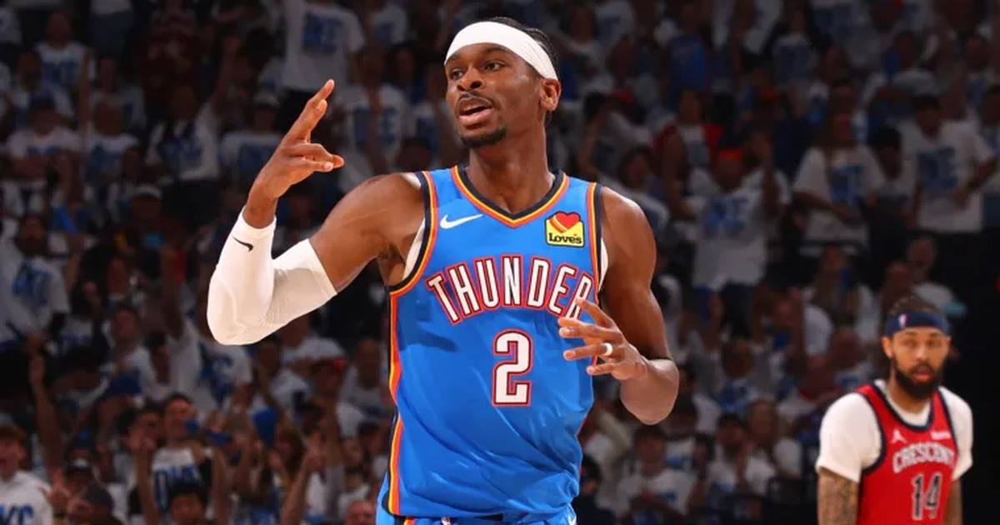

SGA Extends the Streak: 141 Straight 20+ Games, the Longest in NBA History
Shai Gilgeous-Alexander dropped 32 on the Spurs in the Thunder's 116-104 opening-night win, stretching his regular-season 20-point streak to 141 games — 15 clear of Wilt Chamberlain's record.

Disclosure: this post contains affiliate links. I earn a commission on qualifying purchases.
Shai Gilgeous-Alexander doesn't do off nights. In Oklahoma City's 116-104 opening-night win over San Antonio on Tuesday, the back-to-back MVP put up 32 points, 6 rebounds, 4 assists, 3 steals and 3 blocks — and extended his regular-season 20-point streak to 141 consecutive games, the longest in NBA history.
The streak
141 straight regular-season games with at least 20 points. The last time SGA was held under 20 was October 30, 2024 — nearly two full calendar years ago.
The all-time leaderboard:
• Shai Gilgeous-Alexander — 141 (active)
• Wilt Chamberlain — 126
• Wilt Chamberlain — 92
• Oscar Robertson — 79
• Kevin Durant — 72
• Michael Jordan — 72
SGA broke Wilt's 126-game record during the 2025-26 season, closed that campaign at 140, and picked up right where he left off. He's now 15 games clear of the most unbreakable name in the record book.
Opening night in San Antonio
The game itself was a statement — and a bit of revenge. The Spurs bounced OKC in last year's Western Conference Finals; this time the Thunder led 65-44 at halftime and never looked back.
• SGA: 32 pts (13-27 FG, 3-7 3PT), 6 reb, 4 ast, 3 stl, 3 blk in 36 minutes. Doing it on both ends.
• Victor Wembanyama: a nightmare opener — 12 points on 1-of-13 shooting after starting 0-for-12, though he added 13 rebounds and 6 blocks.
• Chet Holmgren: 14 points, 7 rebounds, 4 blocks.
One more record for the night: it was SGA's fourth career season-opening 30+ point game, a Thunder franchise record — passing Kevin Durant and Russell Westbrook, who each had three.
The MVP three-peat case starts now
SGA won MVP in 2024-25 (32.7 ppg) and again in 2025-26 (31.1 ppg on a career-high 55.3% shooting), leading the Thunder to the league's best record both years and the franchise's first OKC-era title in 2025. The preseason chatter was all about Wembanyama's leap. Opening night was a reminder: the mountain still has SGA standing on top of it.
Sources: USA Today · NBC Sports · Statitudes: "NBA Game Notes (Oct. 20, 2026)"
Watch
Source: MVP WORK - Shai Gilgeous-Alexander goes off in Opening Night win against the Spurs | NBA on ESPN (NBA on ESPN)
ESPN's highlight package from SGA's 32-point opening night — the buckets that pushed the streak to 141 and buried the Spurs.
Gear up: Sports category post → [Fanatics](https://fanatics.93n6tx.net/WOLjqe): via Fanatics